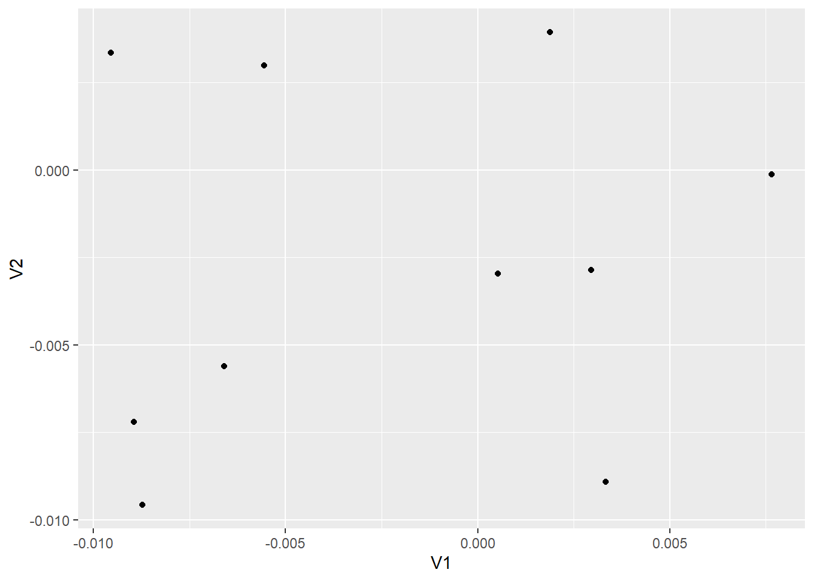
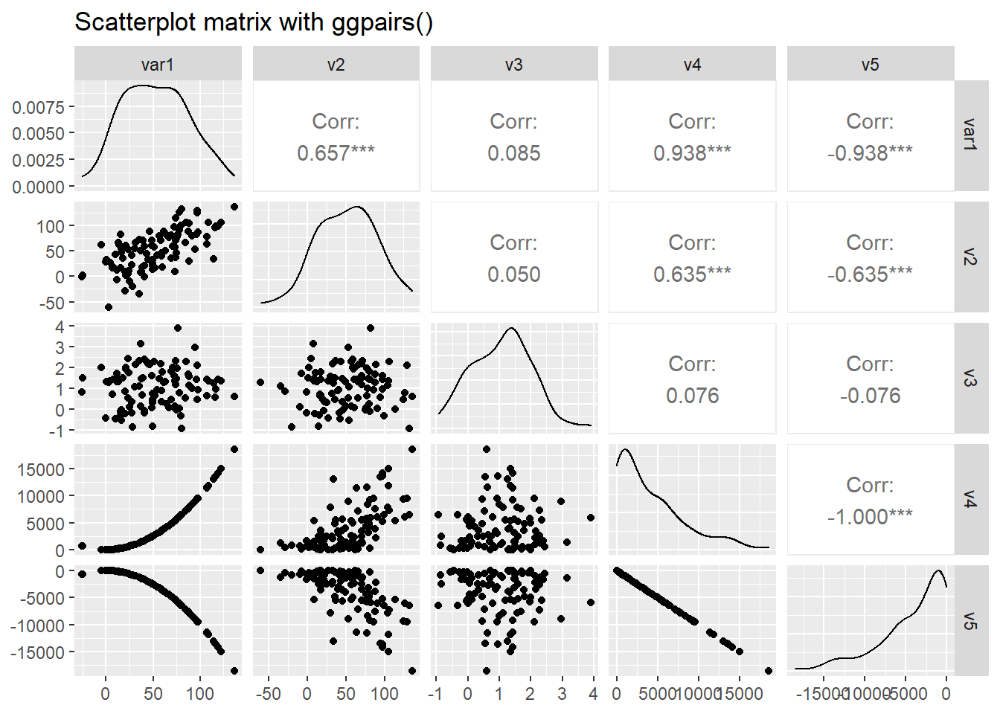

Scatterplots
The first data visualisation technique we introduce is the Scatterplot (or bivariate plot), which allows for two variables to be plotted against one another, with one plotted on the x-axis, and the other on the y-axis. This allows us to examine if there is any relationship between the two variables, such as positive or negative correlation, and whether the relationship appears linear or not.
Let's say we wanted to observe the relationship between departure and arrival delays. We can do that in R using the ggplot function. First, we can set up the plotting region for our scatterplot of departure against arrival delays as follows:
ggplot(data = Alaska, mapping = aes(x = dep_delay, y = arr_delay))Figure 1: Figure 1: Plot with no layers.
Here, we have set up our plotting region by giving to the ggplot function:
- The data
Alaskaby settingdata = Alaska. - The mapping of the coordinates for the axes using
aes(x = dep_delay, y = arr_delay), whereaes()relates to the plots aesthetics. That is,dep_delaymaps to thexcoordinate; andarr_delaymaps to theycoordinate.
In order to include the points on the scatterplot we now need to add an additional layer using the + command. The points are then added as follows:
ggplot(data = Alaska, mapping = aes(x = dep_delay, y = arr_delay)) +
geom_point()
Figure 2: Figure 2: Relationship between arrival and departure delays.
where geom_point specifies that the geometric objects to add to our plotting region are points.
When adding layers using ggplot it should be noted that:
- the
+command should come at the end of lines, otherwise R will produce an error. - when adding additional layers it is a good idea to take a new line after each
+command. This is so your code will be nice and clear with each layer given its own line of code. This is handy for code debugging.
We can change the axes labels and include a title on our plot by adding another layer as follows:
ggplot(data = Alaska, mapping = aes(x = dep_delay, y = arr_delay)) +
geom_point() +
labs(x = "Departure delay (minutes)", y = "Arrival delay (minutes)",
title = "Alaska Airlines flights leaving NYC in 2013") Figure 3: Figure 3: Relationship between arrival and departure delays with nice labels.
As departure delays increase, arrival delays also tends to increase.
Over-plotting
From our scatterplot it is clear to see that the vast majority of the points lie close to zero for both departure and arrival delays. This can make it difficult at times to observe what is going on. This is due to so many points being plotted very close to each other, and often plotted over one another in such a way that it is impossible to count how many points are actually plotted. This is referred to as over-plotting. Using ggplot, there are two ways we can address this problem:
- adjust the transparency of the plotted points using the
alphaargument. - jitter the points using the
geom_jitterfunction.
Transparency - We shall first alter the transparency of the points and see if this improves the situation. This is done as follows:
ggplot(data = Alaska, mapping = aes(x = dep_delay, y = arr_delay)) +
geom_point(alpha = 0.2) +
labs(x = "Departure delay (minutes)", y = "Arrival delay (minutes)",
title = "Alaska Airlines flights leaving NYC in 2013") Figure 4: Figure 4: Relationship between arrival and departure delays with alpha = 0.2.
The alpha command ranges between 0 and 1, where 0 relates to 100% transparency, while 1 (default) sets the points to be 100% opaque. By changing the transparency levels of the points we can observe clusters of points that are close to one another as they will be darker than areas of the plot with fewer points clustered together.
Task: Play around with different levels of alpha to see how it effects the points.
You may want to edit the R code above.
ggplot(data = Alaska, mapping = aes(x = dep_delay, y = arr_delay)) +
geom_point(alpha = 0.6) +
labs(x = "Departure delay (minutes)", y = "Arrival delay (minutes)",
title = "Alaska Airlines flights leaving NYC in 2013") Jittering - The idea behind jittering is that each point is randomly moved, or nudged, slightly from its original position in such a way that clusters of points with the same coordinates can be observed, instead of being plotted on top of one another. To understand this, let's create a small data set consisting purely of zeros, such that:
jitter.example <- matrix(0, nrow = 10, ncol = 2)This basically creates a 10 by 2 matrix of zeros. You can look at it in the console by simply typing:
jitter.example## [,1] [,2]
## [1,] 0 0
## [2,] 0 0
## [3,] 0 0
## [4,] 0 0
## [5,] 0 0
## [6,] 0 0
## [7,] 0 0
## [8,] 0 0
## [9,] 0 0
## [10,] 0 0Now, ggplot only works with data frames and not matrices, so we need to convert jitter.example into a data frame. This can be done using:
jitter.example <- as.data.frame(jitter.example)If in doubt, there are functions within R that can be used to determine whether an object is a matrix or a data frame. See:
?is.matrix
?is.data.frameNow, let's plot our toy example:
ggplot(data = jitter.example, mapping = aes(x = V1, y = V2)) +
geom_point()
(#fig:jitter example4)Figure 5: Jitter example data scatterplot.
Note that since changing jitter.example into a data frame, the columns have been given the default variable names V1 and V2. From the plot, if you had never seen our toy example before you would think only a single value was plotted due to them all being zero. If we shift each of the points slightly using jittering we will be able to see them more clearly:
ggplot(data = jitter.example, mapping = aes(x = V1, y = V2)) +
geom_jitter(width = 0.1, height = 0.1)
(#fig:jitter example5)Figure 6: Jittered scatterplot of jitter example data.
Note that geom_jitter has replaced geom_point. Now we can clearly see all 10 observations plotted. The amount of horizontal and vertical jittering of the points is controlled by the width and height arguments within geom_jitter.
Task: Try playing around with different width and height values.
Edit the widthand height values of the previous R code.
ggplot(data = jitter.example, mapping = aes(x = V1, y = V2)) +
geom_jitter(width = 0.01, height = 0.01)
The true values we generated are all zero, so it wouldn't make much sense to jitter them in such a way that they were significantly different from zero.
Now that we understand the idea behind jittering, let's produce a jittered scatterplot of the Alaska data:
ggplot(data = Alaska, mapping = aes(x = dep_delay, y = arr_delay)) +
geom_jitter(width = 30, height = 30) +
labs(x = "Departure delay (minutes)", y = "Arrival delay (minutes)",
title = "Alaska Airlines flights leaving NYC in 2013") Figure 5: Figure 7: Jittered scatterplot of arrival and departure delays.
Now we can see more of the points plotted within the cluster of points around (0,0). However, since this cluster is so large, it can be argued that jittering has not helped much here. Also, it is important to add enough jitter in order to separate the overlapping of points, however, not so much that we lose any pattern observed within the points. It should also be noted that jittering does not change the actual values of the points within the data set, it is merely used to help with visualising the data.
Scatterplot matrix
The ggpairs() function of the GGally package produces a scatterplot matrix where pairwise relationships between several numerical variables are produced together with density estimates of their univariate distributions and correlation coefficients. We will use this code from www.r-graph-gallery.com to illustrate.
library(GGally)
# Create data
data <- data.frame( var1 = 1:100 + rnorm(100,sd=20),
v2 = 1:100 + rnorm(100,sd=27),
v3 = rep(1, 100) + rnorm(100, sd = 1))
data$v4 = data$var1 ** 2
data$v5 = -(data$var1 ** 2)
# Check correlations (as scatterplots), distribution and print correlation coefficient
ggpairs(data, title="Scatterplot matrix with ggpairs()") 